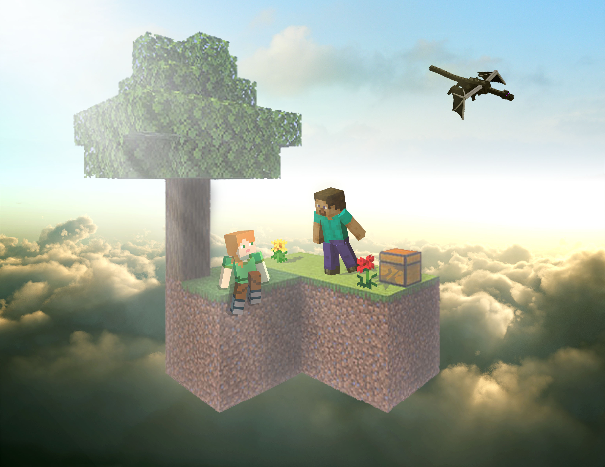

Phone: (407) 123-4567
Email: LandonSanders@email.com
Located At: Orlando, FL
My name is Landon Sanders, and I am working towards a degree in some type of digital design. I put my best effort into whatever work I'm doing, and enjoy learning new skills to further my career.
GitHub: LandonJS709
